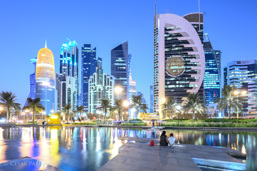
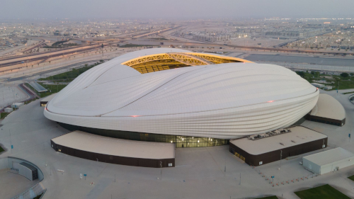
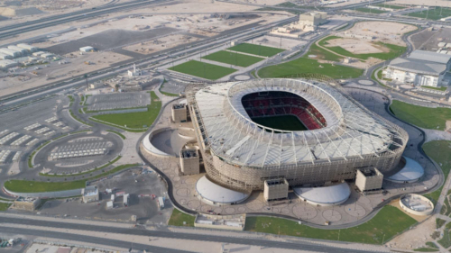
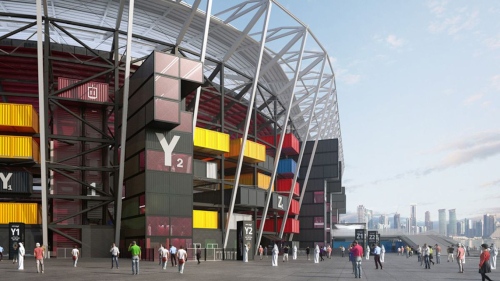

Catar
Dos desertos aos estádios.
Catar (ou Qatar) é um país da Ásia Ocidental que localiza-se na Penísula Arábica e estende-se até o Golfo Pérsico. Apesar de possuir apenas 11.571 km², é considerada uma das nações mais ricas do mundo e um símbolo da união entre a modernidade em infraestrutura e tradições religiosas e culturais.
Escolhido para ser a sede da copa do mundo de 2022 ainda em 2010, o país vem recebendo atenção mundial pelas suas paisagens encantadoras e estádios majestosos. Quer saber mais sobre o país? Neste artigo fizemos um apanhado das informações mais interessantes sobre o emirado.

História.

O Catar corresponde a uma Monarquia Absolutista e Constitucional, concomitantemente. A dinastia reinante no país encontra-se no poder desde 1825. Em 1871, o país pertencia ao domínio otomano, em razão de questões políticas e militares. Ao perder as batalhas ocorridas na Primeira Guerra Mundial, estabeleceu-se uma desordem no Império Otomano, diminuindo, então, seu domínio sobre a região do Catar.
Participou da Revolta Árabe contra os otomanos, saindo bem-sucedidos e diminuindo ainda mais o domínio estabelecido pelos otomanos. A família al-Thani ganhou o direito de governar o Catar, concedido pelo Reino Unido e pelo Império Otomano. Os otomanos, então, renunciaram o direito sobre a região do Catar, e o país passou a ser um protetorado britânico, em 1916.
A sua independência em relação ao Reino Unido foi conquistada em 1971, tornando-se, assim, um Estado Soberano. No ano de 2003, foi aprovada a Constituição no país por meio de um referendo com quase 98% de aprovação. Os partidos políticos são proibidos no Catar, e não há legislatura independente. As eleições parlamentares são uma questão polêmica, visto que ainda não foram estabelecidas no país, sendo adiadas por tempo indeterminado.
É atualmente um dos países mais ricos do mundo e com umas das menores cargas tributárias, segundo o Relatório Global de Competitividade. Mas esse histórico de riquezas deu-se a partir dos anos 40, quando se iniciou no país a exploração do petróleo e gás natural.
O país é rico em recursos naturais, sendo um dos maiores produtores de gás natural do mundo. No ano de 1974, o Qatar Petroleum assumiu a exploração e controle do petróleo existente no país, alavancando a economia.
Escolha da sede.
O processo de escolha para as sedes das Copas de 2018 e 2022 teve início em 2009, e 11 propostas foram recebidas pela federação. Posteriormente, houve a desistência do México e a candidatura da Indonésia foi rejeitada pela Fifa.
Durante o processo de escolha do país-sede da Copa de 2022, restaram cinco propostas: Austrália, Catar, Coreia do Sul, Estados Unidos e Japão. Em novembro de 2010, houve uma reunião dos membros do Comitê Executivo da Fifa, em Zurique, para escolher as sedes das Copas, na qual o Catar recebeu o maior número de votos e foi escolhido para sediar o campeonato de 2022, assim como a Rússia, que sediou o mundial em 2018.
Cidades-sede.
A Copa do Catar conta com cinco cidades como sedes: Doha (a capital), Al Khor, Al Rayyan, Al Wakrah e Lusail.

Doha é a capital do Catar e a cidade mais populosa do país, com cerca de 1,3 milhão de habitantes. A cidade está localizada na costa do Golfo Pérsico, no leste do país. Doha também é considerada o centro econômico do Catar.
Al Khor fica localizada a 50 km de Doha e é uma cidade costeira, ao norte do país, com uma população aproximada de 31 mil habitantes. Com cerca de 20 km de distância da capital, Al Rayyan é um município de 450 mil habitantes e fica localizado no oeste do Catar. Al Wakrah tem cerca de 31 mil habitantes e fica a 40 km da capital, no sul do país."
O Catar também construiu a cidade de Lusail para receber a abertura e a final da Copa do Mundo 2022. Situada a, aproximadamente, 20 km de distância da capital, Doha, o projeto, que teve um custo aproximado de R$ 175 bilhões, é a sede do principal estádio da competição, o estádio Lusail, com capacidade para 80 mil pessoas. A nova cidade conta com hotéis, ilhas artificiais, marinas, shoppings, lojas de luxo e de entretenimento e outros comércios.

Estádios.
Em função da copa, oito estádios foram concedidos para receber os jogos. Entre eles, apenas o Khalifa foi reformado e continuará com sua capacidade original de 40 mil lugares após o fim do torneio. Os outros sete estádios foram construídos. Entre eles, seis terão suas capacidades reduzidas após o mundial e um será desmontado. Depois da Copa, o Catar doará os assentos para estádios de outros países.
Estádio Khalifa (Doha)
O estádio Khalifa foi reformado e ficou pronto em maio de 2017. Ele foi construído em 1976 e é o mais tradicional do país. Está localizado em Doha e tem capacidade para 40 mil torcedores. Na reforma, ganhou os arcos superiores, como uma forma de representar o abraço dos torcedores. O complexo possui centro aquático, shopping e hotel. Os jogos serão realizados nesse local até as quartas de final.

Estádio Al Janoub (Al Wakrah)
Foi o primeiro estádio construído e entregue pelo comitê organizador da Copa, em maio de 2019. O estádio está localizado na cidade de Al Wakrah e tem capacidade para 40 mil pessoas. O projeto é uma homenagem aos tradicionais barcos de pesca de pérolas, símbolos do país, conhecidos como dhow. Foi idealizado para receber partidas até as quartas de final da Copa.
Estádio Nacional Lusail (Lusail)
Esse é o principal estádio da Copa, construído na cidade de Lusail. Seu projeto quis representar a cultura árabe com peças como vasos, tigelas e peças artísticas na decoração. Com capacidade para 80 mil pessoas, o estádio foi escolhido para ser palco da final do torneio. Com o fim da competição, ele será transformado em um centro comunitário para a população.

Estádio Al Bayt (Al Khor)
O estádio Al Bayt tem capacidade para 60 mil pessoas e está localizado na cidade de Al Khor. Foi escolhido para receber a cerimônia de abertura e demais jogos da Copa até as semifinais. O modelo de arquitetura que lembra uma tenda foi escolhido também para homenagear a cultura local, lembrando as Bayt al sha'a, utilizadas pelos povos nômades.

Estádio Ahmad bin Ali (Al Rayyan)
O estádio Ahmad bin Ali está localizado na cidade de Al Rayyan, à beira do deserto. Sua capacidade original é de 22 mil pessoas, mas foi ampliada para 40 mil para a realização da Copa. A obra também representa traços de características locais, como a família, o deserto e o comércio.
Estádio Al Thumama (Doha)
Também localizado em Doha, o estádio Al Thumama tem capacidade para até 40 mil torcedores, e os jogos serão sediados até as quartas de final da Copa. O formato lembra a gahfiya, um chapéu tradicional da região. Após a Copa, a capacidade do estádio será reduzida e os bancos serão doados para países que estão em desenvolvimento.

Estádio Education City (Doha)
O estádio Education City recebeu esse nome por estar integrado ao ambiente de universidades no Catar. Tem capacidade para 40 mil torcedores durante a Copa, e foi projetado para receber as partidas das quartas de final. Também foi construído para ter sua capacidade reduzida após o evento e os seus bancos, doados. Na arquitetura a obra lembra diamantes e possui, em sua parte interior, áreas verdes e ambientes com acessibilidade.

Estádio 974 ou Ras Abu Aboud (Doha)
O estádio Porto de Doha (Ras Abu Aboud Stadium ou 974 Stadium) foi todo construído com uma estrutura de contêineres, com capacidade para 40 mil torcedores, para ser desmontado depois da Copa, com suas peças sendo enviadas para contribuir com o desenvolvimento social e esportivo em vários países. O número 974 representa a quantidade de contêineres presentes na obra e o código de discagem no Catar, além disso, o modelo quis homenagear o comércio internacional e as navegações.
Polêmicas.
A vitória do Catar foi altamente criticada após os inúmeros escândalos de corrupção envolvendo a Fifa, incluindo a denúncia de que o governo do país havia pagado à instituição para poder receber o torneio. As denúncias acusaram muitos ex-dirigentes e colaboradores da Fifa de pagamento e recebimento de propina, entre outros delitos.
Em março de 2019, o jornal britânico The Sunday Times informou que o Catar teria comprado os votos em favor de sua candidatura e pagado 880 milhões de euros à Fifa, 21 dias antes da definição do país-sede. O pagamento teria sido realizado em duas parcelas, de 400 milhões e de 480 milhões de euros, além de uma bonificação de 100 milhões se o Catar fosse escolhido. O valor seria repassado pela rede de televisão Al Jazeera, controlada pelo governo.
Trabalho escravizado
As críticas, polêmicas e denúncias contra o Catar não pararam em problemas climáticos e propinas. O comitê organizador da Copa do Catar também foi questionado pelas condições de trabalho dos operários na construção dos estádios, denunciadas pela ONG Anistia Internacional.
Com isso, a imprensa internacional também começou a noticiar as más condições de trabalho nas obras do Catar e até mortes de trabalhadores. Apesar das informações terem sido negadas pelo Catar, o governo do país anunciou mudanças na legislação trabalhista para oferecer melhores condições aos trabalhadores. Atualmente, o Catar está trabalhando com a supervisão da Organização Internacional do Trabalho (OIT).
Somente 12% da população do Catar são nativos, e, com a oferta de trabalho nas obras para a Copa do Mundo, milhares de operários estrangeiros, sendo a maioria de origem da Índia, Nepal, Bangladesh e países menores da Ásia, chegaram ao país em busca de trabalho